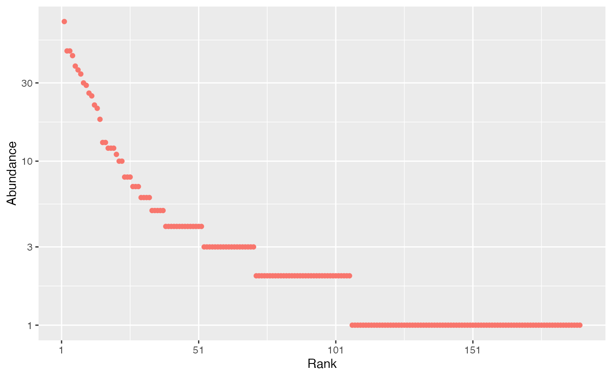
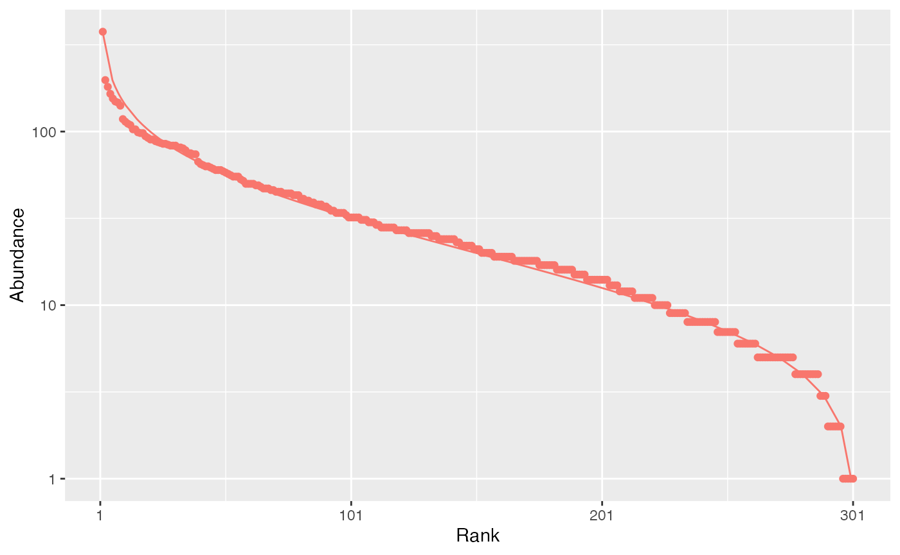
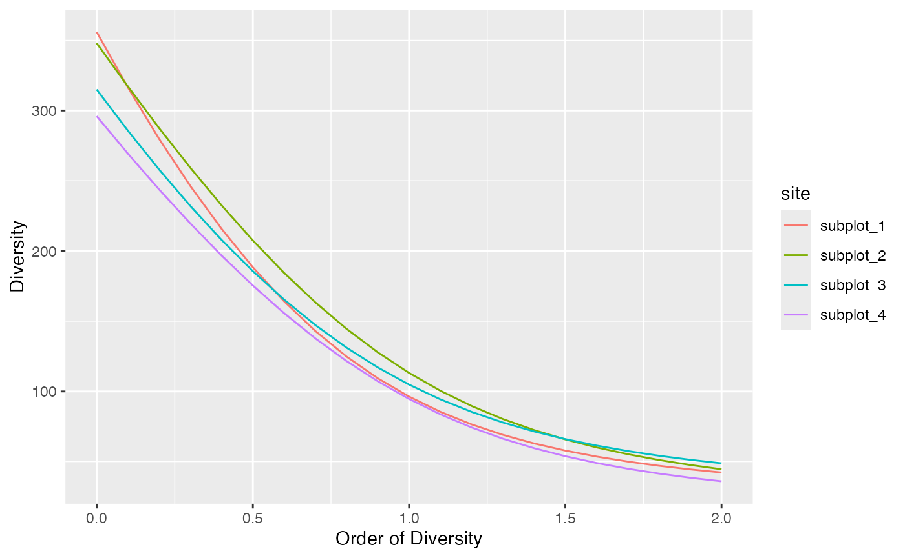
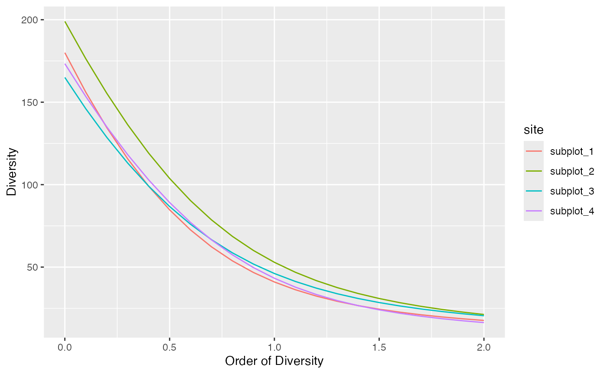
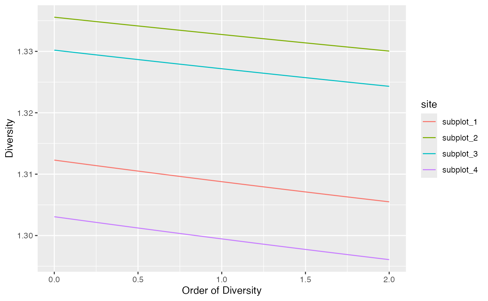
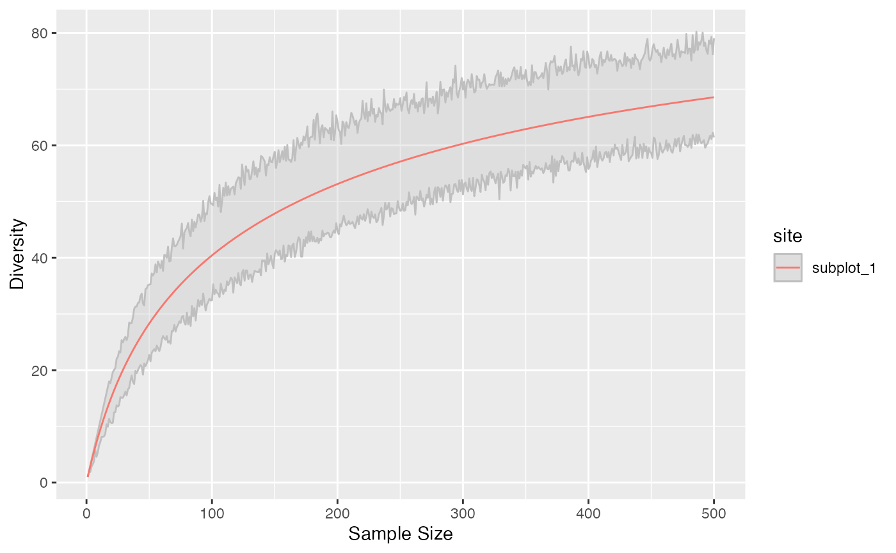
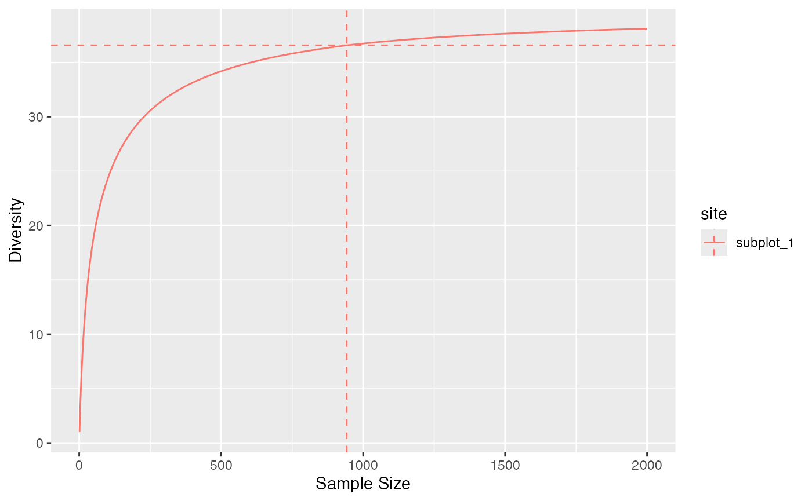
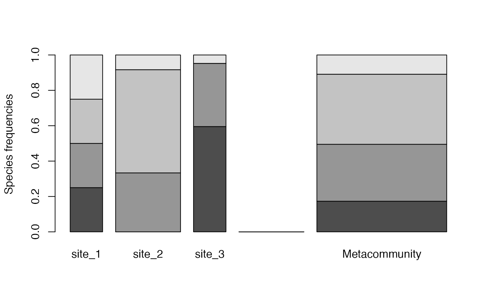

divent is a package for R designed to estimate diversity based on HCDT entropy or similarity-based entropy. It is a reboot of the entropart package, following the tidyverse manifest and easier to use. This is a short introduction to its use.
The package allows estimating biodiversity according to the framework based on HCDT entropy, the correction of its estimation-bias (Grassberger 1988; Chao and Shen 2003; Chao and Jost 2015) and its transformation into equivalent numbers of species (Hill 1973; Jost 2006; Marcon et al. 2014). Estimation of diversity at arbitrary levels of sampling, requiring interpolation or extrapolation (Chao et al. 2014) is available.
Phylogenetic or functional diversity (Marcon and Hérault 2015) can be estimated, considering phyloentropy as the average species-neutral diversity over slices of a phylogenetic or functional tree (Pavoine and Bonsall 2009).
Similarity-based diversity (Leinster and Cobbold 2012) can be used to estimate (Marcon, Zhang, and Hérault 2014) functional diversity from a similarity or dissimilarity matrix between species without requiring building a dendrogram and thus preserving the topology of species (Pavoine, Ollier, and Dufour 2005; Podani and Schmera 2007).
The classical diversity estimators (Shannon and Simpson entropy) can be found in many R packages. Bias correction is rarely available except in the EntropyEstimation (Cao and Grabchak 2014) package which provides the Zhang and Grabchak’s estimators of entropy and diversity and their asymptotic variance (not included in divent).
Estimating the diversity of a community
Community data
Community data is:
- either a numeric vector containing abundances of species (the number of individual of each species) or their probabilities (the proportion of individuals of each species, summing to 1). This format is convenient when a single community is considered.
- or a dataframe whose rows are communities and column are species. Its values are either abundances or probabilities. Special columns contain the site names, and their weights (e.g. their area or number of individuals).
Example data is provided in the dataset paracou_6_abd.
Let’s get the abundances of tree species in the 6.25-ha tropical forest
plot #6 from Paracou forest station in French Guiana. It is divided into
4 equally-sized subplots:
## # A tibble: 4 × 337
## site weight Abarema_jupunba Abarema_mataybifolia Amaioua_guianensis
## <chr> <dbl> <int> <int> <int>
## 1 subplot_1 1.56 2 2 1
## 2 subplot_2 1.56 2 0 1
## 3 subplot_3 1.56 2 2 0
## 4 subplot_4 1.56 4 0 0
## # ℹ 332 more variables: Amanoa_congesta <int>, Amanoa_guianensis <int>,
## # Ambelania_acida <int>, Amphirrhox_longifolia <int>, Andira_coriacea <int>,
## # Apeiba_glabra <int>, Aspidosperma_album <int>, Aspidosperma_cruentum <int>,
## # Aspidosperma_excelsum <int>, Bocoa_prouacensis <int>,
## # Brosimum_guianense <int>, Brosimum_rubescens <int>, Brosimum_utile <int>,
## # Carapa_surinamensis <int>, Caryocar_glabrum <int>, Casearia_decandra <int>,
## # Casearia_javitensis <int>, Catostemma_fragrans <int>, …
# Number of individuals in each community
abd_sum(paracou_6_abd)## # A tibble: 4 × 3
## site weight abundance
## <chr> <dbl> <dbl>
## 1 subplot_1 1.56 942
## 2 subplot_2 1.56 872
## 3 subplot_3 1.56 929
## 4 subplot_4 1.56 798The data in paracou_6_abd is an object of class
abundances, i.e. a tibble with species as columns and sites
as rows. It can be manipulated as any dataframe and plotted as a
rank-abundance curve:
autoplot(paracou_6_abd[1, ])
The rcommunity function allows drawing random
communities, e.g. a log-normal one (Preston
1948):
rc <- rcommunity(1, size = 10000, distribution = "lnorm")
autoplot(rc, fit_rac = TRUE, distribution = "lnorm")
The Whittaker plot (rank-abundance curve) of a random log-normal distribution of 10000 individuals simulated with default parameter (\(\sigma = 1\)) is produced.
Diversity estimation
The classical indices of diversity are richness (the number of species), Shannon’s and Simpson’s entropies:
div_richness(paracou_6_abd)## # A tibble: 4 × 5
## site weight estimator order diversity
## <chr> <dbl> <chr> <dbl> <dbl>
## 1 subplot_1 1.56 Jackknife 3 0 355
## 2 subplot_2 1.56 Jackknife 2 0 348
## 3 subplot_3 1.56 Jackknife 2 0 315
## 4 subplot_4 1.56 Jackknife 2 0 296
ent_shannon(paracou_6_abd)## # A tibble: 4 × 5
## site weight estimator order entropy
## <chr> <dbl> <chr> <dbl> <dbl>
## 1 subplot_1 1.56 UnveilJ 1 4.57
## 2 subplot_2 1.56 UnveilJ 1 4.73
## 3 subplot_3 1.56 UnveilJ 1 4.65
## 4 subplot_4 1.56 UnveilJ 1 4.55
ent_simpson(paracou_6_abd)## # A tibble: 4 × 5
## site weight estimator order entropy
## <chr> <dbl> <chr> <dbl> <dbl>
## 1 subplot_1 1.56 Lande 2 0.976
## 2 subplot_2 1.56 Lande 2 0.978
## 3 subplot_3 1.56 Lande 2 0.980
## 4 subplot_4 1.56 Lande 2 0.972When applied to probabilities (created with
as_probaVector in the following example), no
estimation-bias correction is applied: this means that indices are just
calculated by applying their definition function to the probabilities
(that is the naive, or plugin estimator).
##
## Attaching package: 'dplyr'## The following objects are masked from 'package:stats':
##
## filter, lag## The following objects are masked from 'package:base':
##
## intersect, setdiff, setequal, union
paracou_6_abd %>%
as_probabilities() %>%
ent_shannon()## # A tibble: 4 × 5
## site weight estimator order entropy
## <chr> <dbl> <chr> <dbl> <dbl>
## 1 subplot_1 1.56 naive 1 4.34
## 2 subplot_2 1.56 naive 1 4.48
## 3 subplot_3 1.56 naive 1 4.45
## 4 subplot_4 1.56 naive 1 4.32When abundances are available, many estimators can be used (Marcon 2015) to address unobserved species and the non-linearity of the indices:
ent_shannon(paracou_6_abd)## # A tibble: 4 × 5
## site weight estimator order entropy
## <chr> <dbl> <chr> <dbl> <dbl>
## 1 subplot_1 1.56 UnveilJ 1 4.57
## 2 subplot_2 1.56 UnveilJ 1 4.73
## 3 subplot_3 1.56 UnveilJ 1 4.65
## 4 subplot_4 1.56 UnveilJ 1 4.55
ent_shannon(paracou_6_abd, estimator = "ChaoJost")## # A tibble: 4 × 5
## site weight estimator order entropy
## <chr> <dbl> <chr> <dbl> <dbl>
## 1 subplot_1 1.56 ChaoJost 1 4.51
## 2 subplot_2 1.56 ChaoJost 1 4.68
## 3 subplot_3 1.56 ChaoJost 1 4.62
## 4 subplot_4 1.56 ChaoJost 1 4.50The best available estimator is chosen by default: its name is returned.
Those indices are special cases of the Tsallis entropy (1988) or order \(q\) (respectively \(q=0,1,2\) for richness, Shannon, Simpson):
ent_tsallis(paracou_6_abd, q = 1)## # A tibble: 4 × 5
## site weight estimator order entropy
## <chr> <dbl> <chr> <dbl> <dbl>
## 1 subplot_1 1.56 UnveilJ 1 4.57
## 2 subplot_2 1.56 UnveilJ 1 4.73
## 3 subplot_3 1.56 UnveilJ 1 4.65
## 4 subplot_4 1.56 UnveilJ 1 4.55Entropy should be converted to its effective number of species, i.e. the number of species with equal probabilities that would yield the observed entropy, called Hill (1973) numbers or simply diversity (Jost 2006).
div_hill(paracou_6_abd, q = 1)## # A tibble: 4 × 5
## site weight estimator order diversity
## <chr> <dbl> <chr> <dbl> <dbl>
## 1 subplot_1 1.56 UnveilJ 1 96.3
## 2 subplot_2 1.56 UnveilJ 1 113.
## 3 subplot_3 1.56 UnveilJ 1 105.
## 4 subplot_4 1.56 UnveilJ 1 94.6Diversity is the deformed exponential of order \(q\) of entropy, and entropy is the deformed logarithm of of order \(q\) of diversity:
(d2 <- div_hill(paracou_6_abd, q = 2)$diversity)## [1] 42.28417 44.58777 48.83999 36.01687
ln_q(d2, q = 2)## [1] 0.9763505 0.9775723 0.9795250 0.9722352
(e2 <-ent_tsallis(paracou_6_abd, q = 2)$entropy)## [1] 0.9763505 0.9775723 0.9795250 0.9722352
exp_q(e2, q = 2)## [1] 42.28417 44.58777 48.83999 36.01687If an ultrametric dendrogram describing species phylogeny (here, a mere taxonomy with family, genus and species) is available, phylogenetic entropy and diversity (Marcon and Hérault 2015) can be calculated:
div_phylo(paracou_6_abd, tree = paracou_6_taxo, q = 1)## # A tibble: 4 × 4
## site weight estimator diversity
## <chr> <dbl> <chr> <dbl>
## 1 subplot_1 1.56 UnveilJ 41.0
## 2 subplot_2 1.56 UnveilJ 52.9
## 3 subplot_3 1.56 UnveilJ 46.1
## 4 subplot_4 1.56 UnveilJ 43.2Recall that all those functions can be applied to a numeric vector
containing abundances, without having to build an object of class
abundances.
# Richness of a community of 100 species, each of them with 10 individuals
div_richness(rep(10, 100))## # A tibble: 1 × 3
## estimator order diversity
## <chr> <dbl> <int>
## 1 Jackknife 0 0 100With a Euclidian distance matrix between species, similarity-based diversity (Leinster and Cobbold 2012; Marcon, Zhang, and Hérault 2014) is available:
# Similarity is computed from the functional distance matrix of Paracou species
Z <- fun_similarity(paracou_6_fundist)
# Calculate diversity of order 2
div_similarity(paracou_6_abd, similarities = Z, q = 2)## # A tibble: 4 × 5
## site weight estimator order diversity
## <chr> <dbl> <chr> <dbl> <dbl>
## 1 subplot_1 1.56 UnveilJ 2 1.31
## 2 subplot_2 1.56 UnveilJ 2 1.33
## 3 subplot_3 1.56 UnveilJ 2 1.32
## 4 subplot_4 1.56 UnveilJ 2 1.30Diversity profiles
Diversity can be plotted against its order to provide a diversity profile. Order 0 corresponds to richness, 1 to Shannon’s and 2 to Simpson’s diversities:
profile_hill(paracou_6_abd) %>% autoplot
Profiles of phylogenetic diversity and similarity-based diversity are obtained the same way.
profile_phylo(paracou_6_abd, tree = paracou_6_taxo) %>% autoplot
# Similarity matrix
Z <- fun_similarity(paracou_6_fundist)
profile_similarity(paracou_6_abd, similarities = Z) %>% autoplot
Diversity accumulation
Diversity can be interpolated or extrapolated to arbitrary sampling levels.
# Estimate the diversity of 1000 individuals
div_hill(paracou_6_abd, q = 1, level = 1000)## # A tibble: 4 × 6
## site weight estimator order level diversity
## <chr> <dbl> <chr> <dbl> <dbl> <dbl>
## 1 subplot_1 1.56 Chao2015 1 1000 78.1
## 2 subplot_2 1.56 Chao2015 1 1000 91.1
## 3 subplot_3 1.56 Chao2015 1 1000 87.2
## 4 subplot_4 1.56 Chao2015 1 1000 78.8The sampling level can be a sample coverage, that is converted to the equivalent number of individuals.
# Estimate the diversity at 80% coverage
div_hill(paracou_6_abd, q = 1, level = 0.8)## # A tibble: 4 × 6
## site weight estimator order level diversity
## <chr> <dbl> <chr> <dbl> <dbl> <dbl>
## 1 subplot_1 1.56 Interpolation 1 304 60.5
## 2 subplot_2 1.56 Interpolation 1 347 71.4
## 3 subplot_3 1.56 Interpolation 1 333 68.6
## 4 subplot_4 1.56 Interpolation 1 303 60.5Diversity accumulation curves are available.
accum_hill(
paracou_6_abd[1, ],
q = 1,
levels = 1:500,
n_simulations = 100
) %>%
autoplot()
Phylogenetic diversity can be addressed the same way. Confidence intervals of the estimation can be computed, taking into account sampling variability.
accum_div_phylo(
paracou_6_abd[1, ],
tree = paracou_6_taxo,
q = 1,
levels = 1:2000
) %>%
autoplot()
Estimating the diversity of a meta-community
Meta-community data
A metacommunity is the assemblage several communities.
The set of communities is described by the abundances of their species and their weight.
Species probabilities in the meta-community are by definition the weighted average of their probabilities in the communities. Abundances are calculated so that the total abundance of the metacommunity is the sum of all abundances of communities. If weights are equal, then the abundances of the metacommunity are simply the sum of those of the communities. If they are not, the abundances of the metacommunity are generally not integer values, which complicates the estimation of diversity.
Example:
# Abundances of three communities with four species
(abd <- matrix(
c(
10, 0, 25, 10,
20, 15, 10, 35,
0, 10, 5, 2
),
ncol = 4
))## [,1] [,2] [,3] [,4]
## [1,] 10 10 10 10
## [2,] 0 20 35 5
## [3,] 25 15 0 2
# Community weights
w <- c(1, 2, 1)A set of communities is built.
(communities <- as_abundances(abd, weights = w))## # A tibble: 3 × 6
## site weight sp_1 sp_2 sp_3 sp_4
## <chr> <dbl> <int> <int> <int> <int>
## 1 site_1 1 10 10 10 10
## 2 site_2 2 0 20 35 5
## 3 site_3 1 25 15 0 2The function metacommunity() creates a metacommunity. To
plot it, use argument type = "Metacommunity when plotting
the species_distribution.
(mc <- metacommunity(communities))## # A tibble: 1 × 6
## site weight sp_1 sp_2 sp_3 sp_4
## <chr> <dbl> <dbl> <dbl> <dbl> <dbl>
## 1 metacommunity 4 24.6 45.7 56.2 15.5
plot(communities, type = "Metacommunity")
Each shade of grey represents a species. Heights correspond to the probability of species and the width of each community is its weight.
Diversity estimation
High level functions allow computing diversity of all communities (\(\alpha\) diversity), of the meta-community (\(\gamma\) diversity), and \(\beta\) diversity, i.e. the number of effective communities (the number of communities with equal weights and no common species that would yield the observed \(\beta\) diversity).
The div_part function calculates everything at once, for
a given order of diversity \(q\):
div_part(paracou_6_abd, q = 1)## # A tibble: 7 × 6
## site scale estimator order diversity weight
## <chr> <chr> <chr> <dbl> <dbl> <dbl>
## 1 Metacommunity gamma "UnveilJ" 1 111. 6.25
## 2 Metacommunity beta "" 1 1.09 NA
## 3 Metacommunity alpha "" 1 102. NA
## 4 subplot_1 community "UnveilJ" 1 96.3 1.56
## 5 subplot_2 community "UnveilJ" 1 113. 1.56
## 6 subplot_3 community "UnveilJ" 1 105. 1.56
## 7 subplot_4 community "UnveilJ" 1 94.6 1.56An alternative is the gamma argument of all diversity
estimation function to obtain \(\gamma\) diversity instead of the diversity
of each community.
div_hill(paracou_6_abd, q = 1, gamma = TRUE)## # A tibble: 1 × 4
## site estimator order diversity
## <chr> <chr> <dbl> <dbl>
## 1 Metacommunity UnveilJ 1 111.